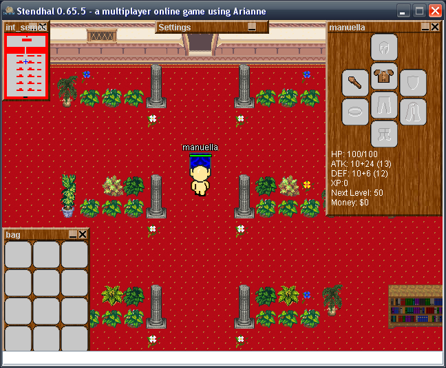

Creating an account
To create an account, just open the game and click on Create account.

Now fill the fields:
- Choose your Stendhal server. If you are not sure about what to
do, simply choose the default one. In case you want to connect to a
different server, please enter it's hostname there.
- Port. Usually Stendhal servers runs at port 32160.
- Username. It is the name of your avatar in the Stendhal world.
- Password. Type in your password twice. It will secure your access to Stendhal, so choose a good one.
- Email. Just in case we need to reset the password or contact you.
Your account will be ready immediately.
